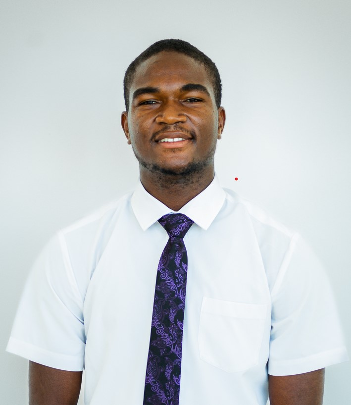

CHARLES ALFRED KOENIG → WDD 130
Hi! I am Charles Alfred Koenig. I enjoy talking to people and inspiring others to
believe in themselves and achieve their wildest dream. I am currently working
for Bloom as a mentor serving BYU-Pathway Worldwide students.
One thing I like about my job is the opportunity it provides me to listen, empathize and
be an encouragement to others while inspiring them to rise about their situation.
I am a student. I am currenlty enrolled at BYU-Idaho(online) studying web development.
I like this course. It helps bring out my creativity and help me to hone my problem solving
skills by planning and designing attractive and appealing websites. I also like quotes.
I have a collection of quotes. Here's one for you:
"Don't be afraid to be < 100% success! You have nothing to loose and everything
to gain." - Charles Alfred Koenig. Nice to meet you.